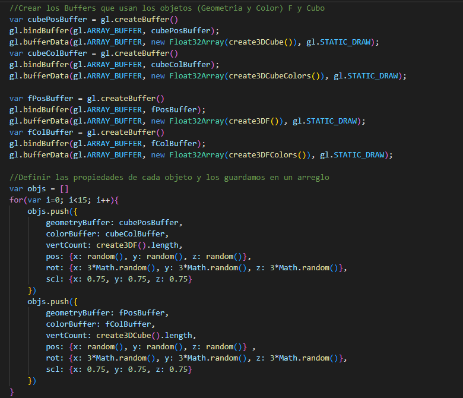

Exploración de WebGL - Gráficos 3D en la Web
Informe Final de Pasantía
Mauricio Meza Burbano
Estudiante de Ingeniería de Sistemas - Universidad Nacional de Colombia
Jean Pierre Charalambos
Profesor tutor
La siguiente página presenta el informe final de mi exploración con la API WebGL (Web Graphics Library), esta tecnología fue lanzada en el 2012 y es utilizada por una gran cantidad de páginas y aplicaciones web para dibujar gráficos 3D interactivos en el navegador sin necesidad de usar plug-ins, extensiones o programas externos.
Durante mi pasantía en la empresa Newrona he utilizado esta tecnología para crear páginas web con componentes 3D haciendo uso de librerías de código abierto como Three.js y P5.js, estas librerías facilitan el desarrollo con WebGL abstrayendo las partes más complejas y verbosas de la API con componentes comunes del mundo digital 3D como luces, cámaras, materiales, escenas y muchos otros más.
Gracias a estas librerías, dentro de mi pasantía no he encontrado una necesidad inmediata de adentrarme directamente en código de WebGL o manejar Shaders en lenguaje GLSL. Sin embargo, para entender a fondo esta tecnología, su funcionamiento, la mejor manera de usarla y desarrollar nuevas herramientas que faciliten su uso, es necesario comprender el código que corre “por detrás” y explorar la manera como WebGL realiza el proceso de renderizado desde el nivel más bajo, pixel por pixel.
Este acercamiento utiliza como principal guia la serie de articulos / curso WebGL Fundamentals creado por Gregg Tavares, gran parte del código que se presenta a continuación proviene de esta guia y ha sido posteriormente modificado utilizando otros libros y referencias que se presentan al final, debido a que los artículos no tienen una versión en español espero que el contenido de esta página sea una introducción rápida a los temas que se presentan en él.
El codigo que genera los ejemplos puede ser encontrado y explorado en el siguiente repositorio, es posible que los ejemplos tengan problemas cargando en dispositivos moviles. Por esto recomiendo utilizar dispositivos de escritorio como PCs y Laptops.
¿Que es WebGL?
WebGL es una librería de rasterizado que a nivel más simple está diseñada para dibujar líneas, puntos y triángulos sobre un Canvas de HTML, muchas aplicaciones incluso ignoran todas sus funcionalidades de renderización 3D y lo utilizan solamente para generar y manipular gráficos en 2D, es por esto que todas las abstracciones comunes de los software de manipulación y renderización 3D como Objetos, Cámaras, Materiales, Luces y muchos otros de estos conceptos deben desarrollarse prácticamente desde cero con las herramientas que WebGL provee, esto se realiza al desglosar cada uno de estos componentes de un ambiente 3D en sus conceptos matemáticos más básicos como Vectores, Matrices y Escalares.
Al reducir la generación de gráficos a estos conceptos y operaciones del álgebra lineal, se convierte el proceso de renderización en instrucciones fácilmente computables y paralelizables de manera que puedan ser ejecutadas de una manera óptima por parte de la GPU.

¿Qué es un Shader?
Los Shaders son programas que se ejecutan directamente en la GPU y son escritos en un lenguaje similar a C llamado GLSL, casi siempre se definen 2 tipos de shaders: El Vertex Shader que es ejecutado por cada vértice definido en la escena 3D, este en general se usa para tomar el vértice definido como un vector de tres dimensiones [X,Y,Z] y proyectarlo dentro del espacio 2D de la pantalla [X,Y]. Así mismo tenemos El Fragment Shader el cual se ejecuta por cada pixel en la pantalla y generalmente se define como un vector de 4 dimensiones [R,G,B,A], que asigna el color con el que se debe pintar ese pixel en específico.
Librerías como P5.js y Three.js emplean dentro de sus APIs métodos que simplifican los procesos de configuración de WebGL y autogeneran shaders a partir de inputs del usuario que presentan y modifican los ambientes 3D interactivos; sin embargo, estas librerías también cuentan con métodos que permiten utilizar shaders personalizados escritos directamente en lenguaje GLSL.

Implementacion de Shaders personalizados en Three.js (izquierda) y P5.js (derecha)
Estas funciones también permiten definir desde JavaScript las diferentes variables como Uniforms, Attributtes, Varyings y Textures a través de las cuales se pasa información a los shaders. Cada una de estas variables tiene diferentes usos que se definen como:
- Attributes: Son principalmente utilizados para pasar información al Vertex Shader sobre los objetos a renderizar, esta información es definida como "arreglos de vectores" también conocidos como Buffers, de esta manera podemos cargar por ejemplo una lista de posiciones de vértices de una figura en coordenadas [X,Y,Z].
- Uniforms: Son utilizadas para pasar variables unicas a cualquiera de los shaders, de esta manera le enviaremos el mismo valor a cada vértice o pixel del objeto, estas variables pueden ser enteros, números de punto flotante, vectores o matrices.
- Varyings: Su principal función es pasar información del Vertex Shader al Fragment Shader, al definir un Varying con el mismo nombre en ambos shaders la información definida en un shader puede ser utilizada en el otro.
- Textures: Estas variables permiten pasar información de imágenes o "arreglos de píxeles" a los shaders.
Los Shaders en su definición más simple describen el proceso de pasar la información de posición de cada vértice al vertex shader (con la variable gl_Position), y la información de color al fragment shader (con la variable gl_FragColor), ambos como un vector de dimensión 4.

Vertex y Fragment Shaders mas simples
Dibujar un Triángulo - El "Hello World" de WebGL
Para dibujar un triángulo con los shaders definidos anteriormente debemos enviar como vectores [X,Y] las coordenadas de los 3 vértices que lo forman, esto se realiza a través de un buffer de manera que el vertex shader se ejecutara por cada vertice y recibira cada par de coordenadas como atributo. Posteriormente, es necesario enviar el color con el que se pintara cada pixel dentro del triángulo, para esto se define una variable uniforme que contenga un vector de dimensión 4 [R,G,B,A], este color será enviado al fragment shader que se ejecutara una vez por cada pixel en el canvas y detectara cuales pixeles se encuentran dentro del triángulo.
Código de WebGL para dibujar un triángulo
Triángulo dibujado sobre un Canvas con WebGL
Triángulo con Varios Colores - Color en el Buffer
Los Buffers no son usados solamente para definir la posición de la geometría, también son capaces de guardar cualquier tipo información que se define por cada vértice.
De esta manera podríamos crear otro buffer que guarde un color diferente para cada uno de los vértices del triángulo, para que este buffer sea utilizado es necesario declarar otro atributte en el vertex shader que reciba la información de color y posteriormente la envíe al fragment shader, el proceso de pasar información entre vertex y fragment se realiza declarando una variable Varying tanto en el vertex como en el fragment shader la cual siempre tendrá el mismo valor en ambos shaders.
Con estos cambios el programa dibujará un triángulo que interpola los colores definidos dependiendo de la cercanía del pixel al vértice definido con ese color.
Buffer de color y cambios en el vertex y fragment shader
Triángulo con colores interpolados
Dibujar Varios Triángulos
Si queremos dibujar más de un triángulo podemos encerrar gran parte del código que dibuja el triángulo dentro de un ciclo donde la posición de los vértices y los colores son definidos de manera aleatoria, esto significa que se llamara varias veces a la función drawArrays() también conocida como llamada de dibujo o draw call. Al hacer esto obtendremos una gran cantidad de triángulos en la pantalla
Código de dibujo de triángulos en un ciclo
Múltiples triángulos con colores y posiciones aleatorias (cambia cada vez que se recargue la página)
Múltiples Triángulos con Buffer de Color
La Implementación anterior no es la única manera de dibujar varios triángulos en el canvas, por ejemplo al crear un buffer mucho más grande con más vértices que definan varios triángulos podemos obtener este mismo resultado, para esto utilizaremos el ejemplo del triángulo multicolor e igualmente utilizaremos un ciclo para crear los buffers posición y color con información aleatoria, se debe tener en cuenta definir el número total de vértices a la hora de llamar la función drawArrays().
Esta Implementación nos permite dibujar varios triángulos con una sola llamada de dibujo, en el mundo de los gráficos generalmente entre menos llamadas de dibujo realice un programa, este correra más rápido y será más óptimo

Definición de arreglos que se guardan en los buffers
Múltiples triángulos multicolores en posiciones aleatorias (cambia cada vez que se recargue la página)
Figura creadas a partir de Triángulos
Siguiendo esta misma lógica, si en lugar de usar valores aleatorios dibujamos triángulos con posiciones y colores definidos podemos crear formas y figuras más complejas, casi todos los gráficos 3D que se presentan en videojuegos, animaciones y toda clase de rénder son formados en sus componentes más básicos por triángulos que definen una geometría.
Letra f creada con un buffer de 6 triángulos (18 vértices)
Letra f en el canvas de WebGL
Mover, Rotar y Escalar Objetos - Matrices de Transformación
Con lo anterior ya podemos dibujar un objeto en WebGL definiendo la posición de cada uno de sus vértices, pero si queremos modificarlo o transformarlo de manera que cambie su posición, tamaño o dirección tendríamos que cambiar manualmente la información de cada vértice que dibuja la figura.
Por suerte el álgebra lineal nos presenta una serie de operaciones matriciales que facilitan la transformación de vectores en el espacio, y como matemáticamente cada vértice es un vector en 3 dimensiones y cada figura es un conjunto de estos vectores, podemos aplicar estas operaciones a cada vértice para modificar el objeto completo.
Las 3 operaciones de transformación comunes en los programas de manipulación 3D son Translación, Rotación y Escalado, cada una de estas operaciones se debe realizar sobre el objeto en cada uno de sus ejes (X, Y, Z) por separado.
Para que las operaciones matemáticas se realicen sobre cada vértice de la figura su implementación debe realizarse directamente en el Vertex Shader.
La Translación (movimiento) se puede definir como una suma de vectores, creamos un vector que define el cambio de posición que queremos sobre cada eje [X, Y, Z], y lo sumamos a cada uno de los vértices del objeto, esto lo podemos definir fácilmente sobre el Vertex Shader al pasar este vector de translación como una uniforme y sumarlo al atributo de posición de cada vértice
El Escalado (cambio de tamaño) se puede definir como una multiplicación de vectores similar al producto punto del álgebra lineal sin la suma final, de esta manera se crea un vector que define cuanto crecerá el objeto en cada eje y lo multiplicamos sobre cada vértice del objeto.
Implementacion de Escalado y Translacion sobre el vertex shader
La Rotación es un poco más compleja debido a que es necesario definir una operación separada para girar sobre cada eje, estas son definidas de mejor manera utilizando una matriz de rotación la cual es multiplicada con el vector de posición de cada vértice, al aplicarse esta multiplicación sobre cada vértice obtendremos una rotación del objeto sobre un eje específico por el valor de un ángulo tetha. Las 3 matrices se multiplican entre si para definir una sola matriz de rotación a la cual se le pasa un solo vector (Rx, Ry, Rz) como parámetro que define el ángulo de rotación en cada eje.
Matrices de Rotacion para cada eje
Las operaciones de Translación y Escalado también pueden definirse como matrices gracias a la forma como se realiza la multiplicación de un vector (el vector de posición) por una matriz.
Matrices de Trasnlacion y Escalado
De esta manera al tener las operaciones como matrices podemos finalmente multiplicar todas las 5 matrices para definir una sola Matriz de Transformación, esta recibe como parámetros el movimiento en [X,Y,Z], el escalado en [X,Y,Z] y la rotación en [X,Y,Z] realizando estas 3 transformaciones en una sola operación.
Vertex Shader con matriz de transformacion completa
Figura despues de aplicar Translacion, Rotacion y Escalado
Figuras en 3D - Proyección Ortográfica
Por el momento solo hemos definido figuras y objetos utilizando vectores en 2 dimensiones, si queremos renderizar objetos en 3 dimensiones debemos definir la posición de sus vértices en 3 dimensiones [X,Y,Z]
Buffer de letra F en 3D creada con 96 vértices (32 triángulos)
Al pasar la información de los vértices en 3 dimensiones WebGL automáticamente procesa la información en el valor Z y proyecta el objeto con una vista ortográfica (sin perspectiva). Este proceso de rasterización internamente utiliza una matriz ortográfica que toma el vector en 3 dimensiones de cada vértice y lo convierte en un vector en 2 dimensiones que define su posición en la pantalla.
Letra F en 3D con proyección ortográfica
Perspectiva - Proyección con Matriz de Perspectiva
Si deseamos tener perspectiva se debe usar otra matriz que tome esta proyección y la modifique para presentar los objetos lejanos de manera más pequeña y los cercanos de manera más grande, esta matriz crea el tan conocido Frustum que recibe como parámetros el campo de visión (FOV) y los valores cercano y lejano para definir la pirámide de visión de la cámara perspectiva.
Matriz que define el Frustum de cámara Perspectiva, y diferencias entre proyección ortografica y perspectiva
Una vez definida esta matriz se pasa al vertex shader como una variable uniforme, de esta manera se multiplica junto con la matriz de transformación y el vector de posición para generar la proyección deseada.
Letra F en 3D con proyección perspectiva
Movimiento de Cámara - Matriz de Vista
Finalmente, para completar la configuración por defecto que la mayoría de ambientes 3D utilizan, se debe definir una cámara que sea capaz de moverse alrededor de la escena.
Una de las sorpresas más grandes que me lleve haciendo esta investigación fue el hecho de que para WebGL no existe el concepto de cámara, la librería siempre renderizara él “cubo unitario” estático que tiene en frente y la única manera de “mover la cámara” es moviendo toda la geometría alrededor de ella y modificándola de manera que quede dentro de este cubo unitario.
Por suerte no hay necesidad de definir nuevas matrices, el movimiento de la cámara se puede simular simplemente generando una matriz de movimiento que a través de los parámetros de translación defina la posición en la que se quiere colocar la cámara y también a través de los parámetros de rotación defina hacia donde está mirando la cámara, una vez tenemos esta matriz calculamos su inversa la cual se conoce como la matriz de Vista, esta matriz se la aplicamos a todos los vértices de la escena al multiplicarla con el resto de matrices en el Vertex Shader.
Vertex Shader final con las 3 matrices de Tranformación, Perspectiva y Vista
Varias Fs en 3D renderizadas con la cámara en una posición superior
Si queremos una cámara que simplemente tenga libre movimiento, podemos definir una matriz de movimiento que la mueva a cualquier punto pasando directamente los parámetros (Tx,Ty,Tz), para que posteriormente la haga girar alrededor de su eje pasando directamente los parámetros de rotación (Rx,Ry,Rz).
Matriz de Vista generada a partir de 1 matriz de translación y 3 matrices de rotación
Pero si queremos generar una aproximación al método de navegación Orbit/Zoom/Pan podemos definir inicialmente la Orbita como una rotación solamente en los ejes X y Y para luego generar un Zoom a partir de un movimiento en el eje Z y finalizar con el Pan como un movimiento del punto central de pivote con una translación libre.
Matriz de Vista generada a partir de 2 matrices de translación y 2 matrices de rotación
Objetos en Movimiento - Animación con WebGL
Una vez tenemos la capacidad de transformar el objeto y la escena podemos animar estas transformaciones para visualizarlas de mejor manera, las animaciones en javascript requieren utilizar el metodo requestAnimationFrame() el cual nos permite ejecutar una función cada vez que el navegador dibuje un nuevo frame en la pantalla, así al definir una función que realice el dibujo de la escena podemos sucesivamente renderizarla múltiples veces por segundo con pequeños cambios en la posición del objeto o la cámara para dar la ilusión de movimiento.
Para esto crearemos una función que a través de las matrices presentadas anteriormente genere dinámicamente los cambios según el paso del tiempo, una vez se realicen las transformaciones haremos una llamada de dibujo con el metodo drawArrays() y finalmente realizaremos una petición al navegador para que vuelva a ejecutar la función de animación en el siguiente frame con el metodo requestAnimationFrame().

Función de animación con cambios matriz de transformación y vista
Animación de la escena con cambios en la rotación del objeto y el zoom de la cámara
Múltiples Objetos Animados
Anteriormente hemos visto que para dibujar varios objetos dentro del mismo entorno podemos definir todos los vértices de todos los objetos dentro del mismo buffer de geometría, o también podemos usar múltiples llamados de dibujo con el mismo buffer aplicando cambios en cada uno de los objetos con diferentes matrices de movimiento. Sin embargo, para WebGL no existe ninguna diferencia entre estos objetos, la librería no guarda ninguna referencia con respecto a su posición, buffer de geometría, color o cualquier otra información de cada objeto, por esta razón para fácilmente dibujar y manipular varios objetos es necesario definir una variable que almacene en formato JSON la información de cada uno de los objetos 3D como el buffer que define su geometría, color, numero de vértices, posición, textura y cualquier otra propiedad que pueda ser únicamente de ese objeto.
Declaración de cada Objeto 3D y sus propiedades con información definida y aleatoria.
De esta manera, cada objeto que renderizamos podrá ser fácilmente referenciado e identificado en cada llamada de dibujo, para dibujarlos simplemente guardamos todos los objetos en un mismo arreglo y los dibujamos iterativamente en un ciclo, cada iteración entonces define los buffers y uniformes de cada objeto por separado y utiliza un solo draw call por cada objeto.
Objetos renderizados en un ciclo con sus atributos y uniformes propios
Varias Fs en 3D animadas en un mismo entorno
Múltiples Tipos de Objetos Animados
Lo anterior nos permite definir la información de cada objeto por separado, esto no solo nos ayuda a dibujar múltiples objetos en diferentes posiciones, también podemos dibujar objetos con diferentes geometrías, colores y cualquier otra propiedad única que guardemos de estos.

Declaramos y utilizamos diferentes Buffers de Geometria y Color para los Objetos
Varios tipos de Objetos 3D animados en un mismo entorno
Geometría con Texturas
Si en lugar de colores planos deseamos usar imágenes mapeadas sobre los objetos, es necesario definirlas y enviarlas a los shaders utilizando un tipo de variable especial llamada Texture, esta variable puede recibir cualquier tipo de "Arreglo de Píxeles" ya sea una imagen cargada o generada en código.
Creación de una variable de textura
Posteriormente para proyectarlas sobre la geometría de un objeto es necesario definir las coordenadas de la textura como un vector en 2 dimensiones que define la posición de cada vértice sobre la imagen, esta información es conocida como las coordenadas UV del objeto y pueden ser definidas dentro de un buffer.
Buffer con las coordenadas UV del objeto
Finalmente, la información de la textura y de las coordenadas UV son empleadas para mapear la imagen encima de la geometría dentro del Fragment Shader.
Fragment shader que recibe la textura y la mapea sobre el objeto usando las coordenadas UV
Objeto 3D con textura mapeada sobre su geometría
Renderizacion a una Textura con FrameBuffer
Seleccion de Objetos con Mouse